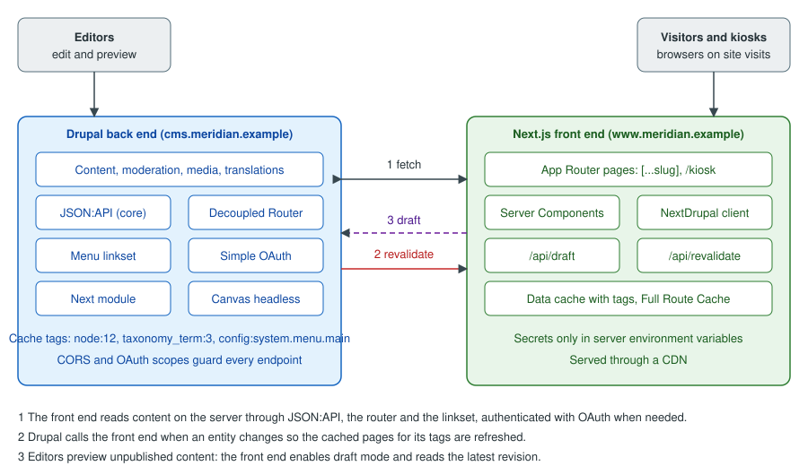

Decoupled Drupal with Next.js
|
This content was generated with the assistance of AI and should be verified against the official documentation before being relied on in production. |
A decoupled (or headless) Drupal site keeps Drupal as the place where content is modelled, edited, moderated and secured, and replaces its theme layer with a separate application that fetches the content through an API and renders the pages. This page, for site architects, developers, administrators and editors, explains the architectures, builds a Next.js App Router front end for the fictitious Meridian Museum (a public site plus a gallery kiosk that shows the objects currently on display), and covers the hard parts that tutorials skip: resolving a URL to an entity, building menus, previews of unpublished content, and invalidating caches in two systems that each have their own idea of "fresh".
It was checked on 2026-10-30 against Drupal 11.4.x, PHP 8.3+ and Drush 13/14 (Drush 13 for Drupal 10.2 and 11, Drush 14 for 11.3 and 12). The contributed pieces and the versions found on their project pages on that date are:
| Project | Version | Notes |
|---|---|---|
|
2.1.0, released 2026-03-13 |
Covered by the Drupal Security Team; works with Drupal ^10 and ^11. Provides the Next.js site entities, previews and revalidators. |
|
2.0 |
The documentation site states that it covers |
|
2.0.7, released 2026-08-22 |
Works with Drupal ^10.1 and ^11; the release fixes JSON:API URL resolution, fragments and query strings, redirect loops and a node alias fatal error. |
|
1.2.8, released 2025-06-02 |
Works with Drupal 9.5, 10 and 11; marked "Minimally maintained". |
|
6.x |
OAuth 2 server; version 6 removed the implicit and password grants (see Authentication and OAuth). |
Drupal Canvas headless ( |
Part of Canvas 1.x |
Requires Drupal 11.3+ and Node.js 22.19+ or 24.5+. |
Drupal 10 reaches end of life on 2026-12-09, so a new decoupled project starts on Drupal 11. Drupal 12.0.0 is planned for the week of 2026-12-07; check each contributed project above for a Drupal 12 release before upgrading (see Preparing for Drupal 12). The Next.js side is documented in depth elsewhere on this site, starting with Next.js; this page links to those pages instead of repeating them.
Why decouple, and what it costs
Decoupling is a trade, not an upgrade. The motives that hold up in practice are:
-
the front end must be a JavaScript application anyway (a kiosk with touch interaction, a product with its own design system, a native-feeling single-page experience);
-
the same content feeds several channels (a website, a kiosk, a mobile app, an AI agent through MCP);
-
the front-end team works in React and TypeScript and does not want to learn Twig, SDC and preprocess hooks.
The costs are real and are paid by the whole team:
-
Two deployments, two caches, two security models. Everything in Performance and Caching still applies to the back end, and Next.js adds its own caches (see Caching).
-
Editor features that live in the theme layer stop working by themselves. Block placement, Layout Builder, Views displays rendered as pages, contextual links, the toolbar edit tabs, and Canvas page editing all render markup in Drupal. A decoupled front end must reproduce them, or use a bridge such as Canvas headless mode (see below).
-
Everything between the URL and the entity is the front end’s job: routing, redirects, 404s, language prefixes, menus, metadata, sitemaps, search and forms.
-
Security work doubles: the API is a public attack surface and the front end holds credentials.
For a brochure site maintained by one team, a normal Drupal theme (see Theming Overview and Render Pipeline) is cheaper to build and to run. The Meridian Museum chooses a progressively decoupled public site and a fully decoupled kiosk, described next.
Fully, progressively and not decoupled
| Approach | How it works | When it fits |
|---|---|---|
Coupled (traditional) |
Drupal routes the request, builds the render array and Twig produces the HTML. JavaScript is optional enhancement. |
Editor-centric sites that need Layout Builder, Canvas, Views and the core page cache. |
Progressively decoupled |
Drupal still serves the page shell, routing, menus and metadata; one or more regions are rendered by a JavaScript application (for example React) that fetches data from JSON:API or a custom endpoint and mounts into an element on the page. |
A rich interactive widget (a collection search, a ticket picker) inside an otherwise editor-managed page. |
Fully decoupled (headless) |
Drupal only serves data. A separate application (here Next.js) receives every visitor request, fetches the data and renders all HTML. Drupal’s themes, block placement and render pipeline are bypassed. |
A kiosk or product site owned by a front-end team; several channels for one body of content. |
Progressive decoupling needs no new infrastructure: a library is declared in a .libraries.yml file and attached to a
page or a block, and the JavaScript fetches /jsonapi/... with the visitor’s session. It is covered in
Libraries and Assets and Front-End Tooling.
A common middle path is a decoupled front end for rendering that still sends editors to Drupal for everything (log
in, edit, moderate), with previews wired back to the front end as shown below.
Drupal’s own decoupled documentation describes the whole space as separating the back end (content management) from the front end (presentation layer), and names React, Vue and Astro as typical front-end frameworks, with JSON:API, GraphQL and the Lupus Decoupled page API as the data options. Its sub-pages are Decoupled Drupal stacks, APIs and useful modules, Frontend Libraries and Decoupled Drupal Canvas.
The Meridian architecture
The figure shows the finished system: the Drupal back end on one host name, the Next.js front end on another, and three flows between them (fetching, revalidation, previews).

The same flows as a sequence, from an editor’s publish click to the next visitor seeing the change:
Two hosts mean two origins. Server-side fetches (React Server Components, Route Handlers) are server-to-server calls and never involve CORS. Only calls made by browser JavaScript (the kiosk’s live "now on display" refresh) need the CORS configuration shown later.
Preparing the Drupal back end
Install the modules
On the DDEV project from Installation with Composer and DDEV:
ddev composer require \
drupal/next:^2.1 \
drupal/decoupled_router:^2.0 \
drupal/simple_oauth:^6 \
drupal/jsonapi_extras
ddev drush en jsonapi decoupled_router simple_oauth consumers next jsonapi_extras -y
ddev drush crjsonapi is a core module that needs no configuration: it exposes every content entity type (and the configuration
entities that opt in) under /jsonapi. The consumers module (a dependency of Simple OAuth) stores the OAuth clients.
JSON:API Extras is optional; it lets a site rename resources and fields, disable resources it does not want to expose, and
set a path prefix. Prefer fewer, deliberate customisations: every rename is a place where front-end code and back-end
configuration can drift apart.
The matching DDEV configuration, with the Next.js application running on the host (or in a second DDEV project) and the Drupal site on its own hostname:
# .ddev/config.yaml of the Drupal project
name: meridian-cms
type: drupal
docroot: web
php_version: "8.3"
webserver_type: nginx-fpm
database:
type: mariadb
version: "10.11"
nodejs_version: "24"
additional_hostnames: []Source: DDEV: Config options
With this file the site answers on https://meridian-cms.ddev.site, which the Next.js project reads from
NEXT_PUBLIC_DRUPAL_BASE_URL.
Read-only by default
JSON:API accepts only read requests unless an administrator turns that off. The setting is "Accept only JSON:API read
operations" on /admin/config/services/jsonapi, stored as read_only: true in jsonapi.settings. A read-only kiosk
should keep it. If the front end creates or updates content (a visitor guestbook, for example), switch it off and
protect each write with OAuth scopes and permissions, never with anonymous access. The related behaviour of anonymous
requests is part of JSON:API.
# config/sync/jsonapi.settings.yml
read_only: trueSource: JSON:API module documentation
What JSON:API exposes for the museum
The exhibition content type becomes the resource type node--exhibition, served at /jsonapi/node/exhibition; the
topic and gallery vocabularies become taxonomy_term--topic and taxonomy_term--gallery; the media types become
media--image, media--document and media--remote_video. The custom content entity collection_object from
Custom Entity Types has no bundles, so it becomes
collection_object--collection_object at /jsonapi/collection_object/collection_object, with the fields
accession_number, period, material, dimensions and on_display as attributes.
GET /jsonapi/collection_object/collection_object?filter[on_display]=1&sort=accession_number&page[limit]=20&fields[collection_object--collection_object]=accession_number,label,period,material,on_display HTTP/1.1
Host: meridian-cms.ddev.site
Accept: application/vnd.api+jsonSource: JSON:API: Filtering
Four JSON:API habits matter for a front end:
-
Sparse fieldsets (
fields[type]=a,b) cut payload size dramatically; always send them. -
Includes (
include=field_hero_media.field_media_image) resolve references in one request, and the related resources arrive in the top-levelincludedarray that the client must stitch back together. The NextDrupal client does the stitching (the "deserializer" in its documentation). -
Pagination is capped by the server (
page[limit]cannot exceed 50); loop onlinks.nextrather than asking for more. -
Filters on unpublished or access-restricted data are access-checked per entity, so counts and ordering for anonymous clients only cover what they may see.
Because JSON:API responses are cacheable and carry cache metadata, they work well with the layers described in Render API and Cache Metadata. Also consider the alternatives: a GraphQL schema when clients need very tailored queries (see GraphQL) and the core REST resources for single-purpose endpoints (see REST and Serialization).
Authentication for the front end
Published content of the museum is public, so the build and the visitors need no credentials. A token is needed only
for what anonymous visitors cannot see: unpublished drafts, and any write operation. Simple OAuth’s client credentials
grant fits that server-to-server case: the Next.js server holds a client ID and secret for a dedicated Drupal user with a
narrow role, and exchanges them at /oauth/token for a short-lived bearer token. The steps are:
-
Generate the key pair at
/admin/config/people/simple_oauth(or withdrush simple-oauth:generate-keys, writing the keys outside the web root). -
Create a user
kiosk-apiwhose role holds only what the front end needs: access to content, plus "view latest version" and "view any unpublished content" for the preview user (use a second user for previews). -
Add a consumer under Configuration > Web services > Simple OAuth > Consumers, enable the
client_credentialsgrant, choose that user and a scope or role, and set a client secret. -
Store the client ID and secret in the Next.js server environment (never in code, never in a
NEXT_PUBLIC_variable).
# .env.local of the Next.js project (never committed; values are placeholders)
NEXT_PUBLIC_DRUPAL_BASE_URL=https://meridian-cms.ddev.site
NEXT_IMAGE_DOMAIN=meridian-cms.ddev.site
DRUPAL_CLIENT_ID=CHANGE_ME
DRUPAL_CLIENT_SECRET=CHANGE_ME
DRUPAL_REVALIDATE_SECRET=CHANGE_METhe variable names above are the ones the next-drupal documentation uses. NEXT_PUBLIC_DRUPAL_BASE_URL is exposed to
the browser by design (it is only a URL), while the other three must stay server-only. The OAuth background is in
Client credentials and client authentication;
the Drupal specifics (scopes, consumers, refresh tokens) are in
Authentication and OAuth. Anonymous cookie-less requests to JSON:API must
never carry a session: a bearer token on a request does not need CSRF tokens, but a cookie-authenticated write does.
CORS for browser calls
Server-side fetches ignore CORS. A browser script on https://www.meridian.example calling
https://cms.meridian.example/jsonapi/... does need it. Drupal core handles CORS through the cors.config container
parameter, which is off by default:
# web/sites/default/services.yml (kept out of the committed default; one file per environment)
parameters:
cors.config:
enabled: true
allowedHeaders: ['authorization', 'content-type', 'accept']
allowedMethods: ['GET', 'OPTIONS']
allowedOrigins: ['https://www.meridian.example']
allowedOriginsPatterns: []
exposedHeaders: false
maxAge: 600
supportsCredentials: falseList exact origins; do not use '*' on an API that serves authenticated data, and keep supportsCredentials: false
unless the browser really sends cookies. The general CORS mechanism is explained in
CORS. A reverse proxy or CDN in front of Drupal must forward the Origin header and the
Vary: Origin response header, or a cached response for one origin is served to another.
Routing: from a URL to an entity
A Next.js catch-all route receives /exhibitions/dinosaur-hall and has to find the entity. Drupal knows the answer
(path alias, redirect, language prefix, front page), so the front end asks instead of guessing. Three approaches exist:
-
Convention: put the UUID or node ID in the URL. Simple, but it discards editor-controlled aliases and loses SEO.
-
Filter JSON:API by alias: core stores aliases in
path_alias, but they are not a filterable attribute of the node resource unless the contributed JSON:API Extras or Pathauto fields expose them (thepathfield has analiassub-property that can be filtered in recent releases); fragile with redirects and multiple languages. -
Decoupled Router: a dedicated endpoint that resolves a front-end path.
Decoupled Router
The Decoupled Router project page describes the module as an endpoint that takes a front-end path and tries to resolve
it to an entity, following redirects and URL aliases as needed, and returning information about the route and the
underlying entity. The endpoint is /router/translate-path with a path query parameter:
curl -s "https://meridian-cms.ddev.site/router/translate-path?path=/exhibitions/dinosaur-hall" \
-H "Accept: application/json"Source: Decoupled Router project page
A typical resolved response has these parts (shortened):
{
"resolved": "https://meridian-cms.ddev.site/exhibitions/dinosaur-hall",
"isHomePath": false,
"entity": {
"canonical": "https://meridian-cms.ddev.site/exhibitions/dinosaur-hall",
"type": "node",
"bundle": "exhibition",
"id": "12",
"uuid": "6f1c0a3e-0000-4000-8000-000000000012"
},
"label": "Dinosaur Hall",
"jsonapi": {
"individual": "https://meridian-cms.ddev.site/jsonapi/node/exhibition/6f1c0a3e-0000-4000-8000-000000000012",
"resourceName": "node--exhibition",
"pathPrefix": "jsonapi",
"basePath": "/jsonapi",
"entryPoint": "https://meridian-cms.ddev.site/jsonapi"
}
}Source: Decoupled Router project page
The UUID and the jsonapi.resourceName are all the front end needs to request the full resource, and isHomePath lets
it render the home page for /. When the requested path is a redirect (the Redirect module, or an old alias), the
response describes the destination and the front end can answer with an HTTP redirect (redirect() from next/navigation
or permanentRedirect()) so crawlers update their index; the exact redirect keys in the response should be checked
against the installed version, because the 2.0.x releases changed redirect-loop and query-string handling.
Pitfalls:
-
Language prefixes: the path must include the prefix of the language (
/es/exposiciones/sala-de-dinosaurios); the endpoint resolves in the context of the request. See Multilingual. -
Unpublished and access-denied content: the response for a path the caller may not see is a 403 or 404, not a hint; preview requests need the authenticated token.
-
Decoupled Router is one request per page. Put it behind the same cache layer as the content, or resolve in
generateStaticParamsat build time and revalidate on change. -
A trailing slash and the query string: normalise paths in the front end before calling the endpoint.
-
Core aliases remain the single source of truth: configure Pathauto patterns once (see Menus and Path Aliases) and let the front end follow whatever the router returns.
The catch-all route in the App Router
The next-drupal documentation builds dynamic pages with generateStaticParams (using
getResourceCollectionPathSegments), translatePath and getResourceByPath. The following page combines the
documented client methods into a catch-all route for the museum (TypeScript, Next.js App Router):
// app/[...slug]/page.tsx
import { notFound } from "next/navigation";
import { draftMode } from "next/headers";
import type { Metadata } from "next";
import { drupal } from "@/lib/drupal";
import { Exhibition } from "@/components/exhibition";
import { BasicPage } from "@/components/basic-page";
type Props = { params: Promise<{ slug: string[] }> };
export async function generateStaticParams() {
const pages = await drupal.getResourceCollectionPathSegments(
["node--exhibition", "node--page"],
{ pathPrefix: "" },
);
return pages.map((p) => ({ slug: p.segments }));
}
async function load(slug: string[], draft: boolean) {
const path = await drupal.translatePath(`/${slug.join("/")}`);
if (!path) return null;
const type = path.jsonapi?.resourceName;
const uuid = path.entity.uuid;
if (!type) return null;
return drupal.getResource(type, uuid, {
withAuth: draft,
params: {
include: "field_hero_media.field_media_image",
...(draft ? { resourceVersion: "rel:latest-version" } : {}),
},
});
}
export async function generateMetadata({ params }: Props): Promise<Metadata> {
const { slug } = await params;
const { isEnabled } = await draftMode();
const node = await load(slug, isEnabled);
return { title: node?.title ?? "Meridian Museum" };
}
export default async function Page({ params }: Props) {
const { slug } = await params;
const { isEnabled } = await draftMode();
const node = await load(slug, isEnabled);
if (!node) notFound();
switch (node.type) {
case "node--exhibition":
return <Exhibition node={node} />;
case "node--page":
return <BasicPage node={node} />;
default:
notFound();
}
}Source: Next-Drupal: Building pages
The Next.js side of this file (async params, draftMode(), notFound()) is explained in
Dynamic Routes and Route Groups and
Data Fetching. resourceVersion: "rel:latest-version" is the JSON:API revisions
parameter; it returns the newest revision (a draft in the moderation workflow) rather than the default published one, and
only to a caller who holds the permissions to view latest versions (see
Content Moderation, Workflows and Revisions).
The client itself is created once:
// lib/drupal.ts
import { NextDrupal } from "next-drupal";
const baseUrl = process.env.NEXT_PUBLIC_DRUPAL_BASE_URL as string;
export const drupal = new NextDrupal(baseUrl, {
auth: {
clientId: process.env.DRUPAL_CLIENT_ID as string,
clientSecret: process.env.DRUPAL_CLIENT_SECRET as string,
},
});Source: Next-Drupal: Authentication
The NextDrupal class is for the App Router and NextDrupalPages for the Pages Router, according to the client
introduction. The documented authentication options are bearer (OAuth), basic and Auth.js sessions, plus custom
functions; use bearer in production and never basic with the shared admin account.
Menus
The core linkset endpoint
Navigation is editor data (see Menus and Path Aliases), so a headless front
end must read it from Drupal instead of hard-coding links. Drupal’s decoupled-menus initiative produced a menu linkset
endpoint. According to the decoupled menus documentation it is part of core as of Drupal 10.1.0 (earlier versions use
composer require 'drupal/decoupled_menus:^1.0@beta'), whereas the JSON:API Menu Items project page says that Drupal
10.2 and later include a core linkset endpoint; check the release notes of the version in use, and on Drupal 11.4 the
feature is available. It is switched on in the site settings under Web services, at /admin/config/services/linkset
(the configuration key is linkset_endpoint).
Once enabled, the menu with machine name main is served at /system/menu/main/linkset, and a language prefix returns the
translated menu (/es/system/menu/main/linkset). The endpoint respects user permissions, so anonymous callers see only
what they may see, and administrative menus need an authenticated user. If the front end is on another domain and the
browser fetches the menu, enable CORS.
# enable the endpoint at /admin/config/services/linkset first
curl -s https://meridian-cms.ddev.site/system/menu/main/linksetSource: Decoupled menus: API usage
The response follows the IETF linkset draft. It contains a linkset array with an anchor and a flat item list;
each item has href, title, hierarchy and machine-name. The hierarchy array gives the position of the link in
the menu tree as index strings, so a top-level link has one index and its children add more; the front end rebuilds the
tree from it. The excerpt below is shortened and the exact hierarchy values depend on the menu (the endpoint output of
the installed version is the reference):
{
"linkset": [
{
"anchor": "https://meridian-cms.ddev.site/system/menu/main/linkset",
"item": [
{ "href": "/visit", "title": "Visit", "hierarchy": ["0"], "machine-name": "main" },
{ "href": "/exhibitions", "title": "Exhibitions", "hierarchy": ["1"], "machine-name": "main" },
{ "href": "/exhibitions/dinosaur-hall", "title": "Dinosaur Hall", "hierarchy": ["1", "0"], "machine-name": "main" }
]
}
]
}Source: Decoupled menus overview
Verification checklist for a menu: request the endpoint anonymously and as an editor, with and without a language prefix;
confirm that disabled links and links to unpublished content are absent for anonymous callers; confirm that href values
are front-end paths (or rewrite them; see below); change a title in the UI and confirm the response changes after the
caches were invalidated.
Turning the flat list into a tree
// lib/menu.ts
export type MenuItem = { title: string; href: string; children: MenuItem[] };
type LinksetItem = { href: string; title: string; hierarchy: string[] };
export async function getMenu(name: string, langPrefix = ""): Promise<MenuItem[]> {
const base = process.env.NEXT_PUBLIC_DRUPAL_BASE_URL;
const res = await fetch(`${base}${langPrefix}/system/menu/${name}/linkset`, {
next: { tags: [`menu:${name}`], revalidate: 3600 },
});
if (!res.ok) throw new Error(`Menu ${name} returned ${res.status}`);
const data = await res.json();
const items: LinksetItem[] = data.linkset?.[0]?.item ?? [];
const root: MenuItem[] = [];
for (const item of items) {
const path = item.hierarchy.map(Number);
let level = root;
for (let depth = 0; depth < path.length; depth += 1) {
if (depth === path.length - 1) {
level[path[depth]] = { title: item.title, href: item.href, children: [] };
} else {
level = level[path[depth]].children;
}
}
}
return root.filter(Boolean);
}Source: Decoupled menus: API usage
The function assumes that the hierarchy indexes are positions among siblings, which is how the documentation describes
them; if the installed version numbers them differently, sort the items by hierarchy first. Menu links that point at
content come out with Drupal-side URLs; if the back end lives on its own hostname, strip the base URL so <Link>
(see Linking and Navigation) stays inside the Next.js site.
The alternative: JSON:API Menu Items
drupal/jsonapi_menu_items serves /jsonapi/menu_items/{menu} and presents menu links as menu link content entities, so it
adds fields found only on those entities (such as UUIDs), covers menu_link_content and menu_link_config items, and
is documented as compatible with the next-drupal tooling. Use the core linkset endpoint when a pure menu structure is
enough and the JSON:API Menu Items module when links must be related to other resources. Because the latter is
minimally maintained, prefer the core endpoint for a new project.
Source: JSON:API Menu Items
Previews of unpublished content
Editors expect "Preview" to show their unsaved or unpublished work in the real front end. Three pieces cooperate:
-
On the Drupal side the Next.js site configuration of the
drupal/nextmodule records the front end’s base URL and its preview settings and enables, per entity type, an in-page preview (an iframe with a site switcher) and the revalidators. -
A Next.js Route Handler turns on draft mode, which sets a cookie that makes the following requests dynamic and authenticated.
-
The page code, on each draft request, reads the latest revision with a token (see the page above).
The draft route handlers are documented as two files under app/api/; enableDraftMode and disableDraftMode come
from next-drupal/draft:
// app/api/draft/route.ts
import { drupal } from "@/lib/drupal";
import { enableDraftMode } from "next-drupal/draft";
import type { NextRequest } from "next/server";
export async function GET(request: NextRequest): Promise<Response | never> {
return enableDraftMode(request, drupal);
}// app/api/disable-draft/route.ts
import { disableDraftMode } from "next-drupal/draft";
export async function GET() {
return disableDraftMode();
}Source: Next-Drupal: Draft Mode
The Drupal side must also be configured for the entity types that can be previewed; the draft-mode page of the
documentation says so and links a separate guide. In the admin UI that is "Next.js" under Configuration > Web services
(sites) and the entity types page /admin/config/services/next/entity-types, where per entity type the preview mode and
the on-demand revalidation plugins are chosen. Create one site entry for the production front end and one per preview
environment.
Draft mode in Next.js itself (the __prerender_bypass cookie, why the secret check matters and what changes under Cache
Components) is explained in Advanced Patterns.
Security of previews:
-
The enable route must verify a secret or a signed token before it sets the cookie, otherwise anyone can bypass the static cache and make the server issue authenticated requests.
enableDraftMode(request, drupal)is the supported entry point; do not reimplement it with a guessable query string. -
The token used for drafts belongs to a preview user with the least privileges needed: view latest versions and unpublished content, nothing else. Do not reuse the administrator account.
-
Preview responses must not be cached by a CDN. Check that the CDN rules key on the draft cookie or bypass the cache for the
/api/draftpath. -
The preview URL is unguessable only if the secret is; rotate it when staff change.
In Canvas headless mode the preview mechanism is different and handled by the module itself (see below).
Cache invalidation and revalidation
A decoupled page can be stale in three places: Drupal’s dynamic page cache and page cache, a CDN or reverse proxy in front of Drupal, and the Next.js caches (Data Cache, Full Route Cache, CDN of the front end). Each system has one invalidation vocabulary, and the work is translating between them.
Drupal’s side: cache tags
Every JSON:API response is a cacheable response with cache tags (node:12, node_list, file:5, config:...) that
Drupal invalidates when the entities change. To see them in responses during development, turn on cacheability debug
headers (the X-Drupal-Cache-Tags response header) in services.yml:
# web/sites/default/services.yml (development only)
parameters:
http.response.debug_cacheability_headers: trueSource: Cache API: Cache tags
Use them to learn which tags a request depends on, not as a production contract: a front end that stores raw Drupal tags must also be told when a tag is invalidated, and Drupal does not emit that event to outside systems by default. Cache metadata in general is explained in Render API and Cache Metadata. A proxy such as Varnish or a CDN that purges by tag is configured separately (Performance and Caching).
Next.js’s side: tags, paths and time
The Next.js App Router can refresh content by time (next: { revalidate: 3600 }), by tag (next: { tags: [...] } plus
revalidateTag) or by path (revalidatePath). The next-drupal documentation shows the time-based and tag-based forms with
the native fetch. The full model, including the Next.js 16 signatures such as revalidateTag(tag, "max") and the
Cache Components rules, is in Caching and
Incremental Static Regeneration. For public museum data the front
end fetches with the native fetch and attaches tags that Drupal can compute from the entity alone:
// lib/jsonapi.ts
const base = process.env.NEXT_PUBLIC_DRUPAL_BASE_URL as string;
export async function getCollection<T>(
resourceName: string, // for example "collection_object--collection_object"
query: string, // JSON:API query string without the leading "?"
): Promise<{ data: T[]; links: Record<string, { href: string }> }> {
const [entityType, bundle] = resourceName.split("--");
const res = await fetch(`${base}/jsonapi/${entityType}/${bundle}?${query}`, {
headers: { Accept: "application/vnd.api+json" },
next: {
revalidate: 3600, // safety net if a webhook is lost
tags: [`jsonapi:${resourceName}`],
},
});
if (!res.ok) throw new Error(`JSON:API returned ${res.status}`);
return res.json();
}Source: Next-Drupal: Building pages
The time-based revalidate is the safety net; the tag is the precise path. Every collection fetch carries the tag of its
resource type, so one invalidation of jsonapi:collection_object--collection_object refreshes every list that shows
objects. For single resources add jsonapi:uuid:<uuid>.
The receiving route handler
// app/api/revalidate/route.ts
import { timingSafeEqual } from "node:crypto";
import { revalidatePath, revalidateTag } from "next/cache";
import { NextResponse, type NextRequest } from "next/server";
function validSecret(given: string | null): boolean {
const expected = process.env.DRUPAL_REVALIDATE_SECRET ?? "";
if (!given || !expected) return false;
const a = Buffer.from(given);
const b = Buffer.from(expected);
return a.length === b.length && timingSafeEqual(a, b);
}
export async function POST(request: NextRequest) {
if (!validSecret(request.headers.get("x-revalidate-secret"))) {
return NextResponse.json({ message: "Invalid secret" }, { status: 401 });
}
const body = (await request.json()) as { tags?: string[]; paths?: string[] };
for (const tag of body.tags ?? []) {
revalidateTag(tag, "max"); // stale-while-revalidate, Next.js 16 signature
}
for (const path of body.paths ?? []) {
revalidatePath(path);
}
return NextResponse.json({ revalidated: true, now: Date.now() });
}Source: Next-Drupal: Revalidator
The secret travels in a header, not in the query string, so it does not end up in access logs. Use a POST because the
operation changes state. The same endpoint can be called by the drupal/next module’s own revalidator plugins: the
module documents a Path revalidator that refreshes a site based on the entity’s path, selected for each entity type on
/admin/config/services/next/entity-types under On-demand Revalidation. The documentation of the revalidators describes
the Drupal side only (custom plugins extend RevalidatorBase and implement revalidate(EntityActionEvent $event): bool;
configurable ones extend ConfigurableRevalidatorBase), so the receiving Route Handler and its request format must match
what the configured revalidator sends; set the secret in the Next.js site entry and in DRUPAL_REVALIDATE_SECRET.
Revalidation runs at shutdown, so debug output from the plugin does not appear in the page response.
A tag-based revalidator in the museum’s module
When the built-in path revalidator is not enough (a change to one object must refresh the kiosk list, the exhibition
pages that reference it and the home page teaser), the module meridian_collection can send tags itself. It uses the
object-oriented hooks of Drupal 11.1 and later (see Hooks and OOP Hooks):
<?php
declare(strict_types=1);
namespace Drupal\meridian_collection\Hook;
use Drupal\Core\Entity\ContentEntityInterface;
use Drupal\Core\Entity\EntityInterface;
use Drupal\Core\Hook\Attribute\Hook;
use Drupal\Core\Logger\LoggerChannelInterface;
use Drupal\Core\Site\Settings;
use GuzzleHttp\ClientInterface;
use Symfony\Component\DependencyInjection\Attribute\Autowire;
/**
* Tells the Next.js front end which cached data went stale.
*/
final class RevalidateHooks {
public function __construct(
private readonly ClientInterface $httpClient,
#[Autowire(service: 'logger.channel.meridian_collection')]
private readonly LoggerChannelInterface $logger,
) {}
#[Hook('entity_insert')]
#[Hook('entity_update')]
#[Hook('entity_delete')]
public function onChange(EntityInterface $entity): void {
if (!$entity instanceof ContentEntityInterface) {
return;
}
$url = Settings::get('meridian_revalidate_url');
$secret = Settings::get('meridian_revalidate_secret');
if (!$url || !$secret) {
return;
}
$resource = $entity->getEntityTypeId() . '--' . $entity->bundle();
$payload = [
'tags' => [
'jsonapi:' . $resource,
'jsonapi:uuid:' . $entity->uuid(),
// Menu items change the navigation.
...($entity->getEntityTypeId() === 'menu_link_content' ? ['menu:main'] : []),
],
];
// Run after the response and the database transaction, so Next.js
// never refetches data that is not committed yet.
drupal_register_shutdown_function(function () use ($url, $secret, $payload): void {
try {
$this->httpClient->request('POST', $url, [
'json' => $payload,
'headers' => ['x-revalidate-secret' => $secret],
'timeout' => 3,
]);
}
catch (\Throwable $e) {
$this->logger->warning('Revalidation request failed: @message', ['@message' => $e->getMessage()]);
}
});
}
}The endpoint and secret come from settings.php, which reads the environment (see
settings.php and Environments):
// web/sites/default/settings.php
$settings['meridian_revalidate_url'] = getenv('MERIDIAN_REVALIDATE_URL') ?: NULL;
$settings['meridian_revalidate_secret'] = getenv('MERIDIAN_REVALIDATE_SECRET') ?: NULL;Design notes and pitfalls:
-
A lost webhook (the front end was down) is silent staleness. That is why the fetches keep a
revalidatetime, and why a production system queues the notification (a queue worker with retries, see Queue, Batch and Cron APIs) instead of firing it once. -
Saving a node triggers one request per save, including saves by imports and migrations; throttle or batch for bulk operations (disable the hook in a migration with a setting).
-
Translations are separate entities in separate URLs; include the language in the tags if the front end fetches per language.
-
Revalidating a tag does not rebuild pages; the next visitor request rebuilds them (stale-while-revalidate with the
"max"profile). Warm important pages if a cold request is unacceptable. -
A CDN in front of Next.js has its own cache; see Deployment and Self-Hosting.
-
With several Next.js instances a shared cache handler is needed, otherwise only the instance that received the webhook is refreshed.
Menus, taxonomy terms, media and referenced entities all produce stale parents. Keep a map of "this change refreshes that tag" instead of relying on a clever generic rule; the tests in the kiosk section assert exactly that.
next-drupal and the App Router
next-drupal is the open-source JavaScript client and the matching drupal/next module, both maintained by the Next.js
for Drupal project. Its documentation divides the tooling into the following areas:
| Area | Content |
|---|---|
NextDrupal client |
The |
Drupal module |
Site previewer plugins ( |
Working with JSON:API |
Fetching, creating, updating and deleting resources; deserialisation of |
Customisation |
Authentication (bearer, basic, Auth.js, custom), the fetcher, the deserializer, and caching. |
The documentation site covers version 2.0. The stable 2.0 release is reported to add App Router support (with server
components and dynamic data fetching), Draft Mode, and tag-based cache invalidation, and to support Next.js 15 and
Drupal 11; confirm the exact Next.js versions that the installed package supports in its peerDependencies, because the
Next.js documentation of this site is written for 16.3 (see What’s Changed and Upgrading).
Practical choices:
-
Use the client for authenticated and write operations and for the deserialisation of includes; use plain
fetchwith tags for public reads if you want full control of Next.js caching. The two approaches mix without trouble because the JSON:API is the contract. -
Pick one routing style per project. The Pages Router (
getStaticProps,getStaticPaths) is still documented by next-drupal and works, but new projects use the App Router; the two use different client classes. -
Do not couple templates to Drupal field names everywhere: map the deserialised resource to a small view model near the fetch, so a field rename touches one file.
-
Generate types from the resource shapes (the documentation has a TypeScript page) and keep the schema in the repository.
Older books and tutorials
Modernizing Drupal 10 Theme Development (2023) builds its decoupled example with next-drupal on the Pages Router:
getStaticProps, getStaticPaths and the 1.x DrupalClient. That code still describes a working configuration, but
for new work the client class is NextDrupal for the App Router, the preview mechanism is Draft Mode (rather than the
older Preview Mode and preview URL generators of next-drupal 1.5), and cache invalidation is tag-based. The Pages Router
page of this site, Pages Router, explains the equivalent legacy concepts. Drupal’s own documentation now has a
decoupled section, with JSON:API in core since 8.7, the Decoupled Menus initiative and Canvas support for decoupled
front ends. For the full list of outdated advice, see
Where Older Books and Tutorials Are Outdated.
Canvas headless mode
Drupal Canvas (the visual page builder that replaced Experience Builder; see
Canvas: Visual Page Building) can be used with a decoupled front end.
Its canvas_headless submodule builds on the idea that the editor should keep the drag-and-drop page-building
experience while an external application renders the pages. Canvas’s documentation page for headless mode describes it
as building decoupled front-end applications on top of Canvas with the Headless SDK: the Canvas Headless module lets the
editor embed the application for previews, including draft content, and registers the application’s components in Canvas.
Drupal’s decoupled documentation describes two approaches for decoupled front ends with Canvas: code components
synchronised to an external project with the @drupal-canvas/cli npm package, and the contributed canvas_extjs
module (external JavaScript components with client-side and full server-side rendering, working with Lupus Decoupled).
The headless SDK described here is the dedicated mechanism with framework adapters.
Packages and concepts
| Item | Purpose |
|---|---|
|
Framework-agnostic SDK. |
|
Next.js adapter. Other adapters exist for Astro, Nuxt, TanStack Start and Angular. |
|
Requests page content from Drupal and returns route context, document-head data and a Canvas component tree when Canvas renders the route. |
|
Renders one content entity in a content template view mode, such as a teaser. |
|
Renders the tree using the matching local components. |
|
Component metadata endpoint on the front end; returns 401 without a bearer assertion. |
|
Draft session route: exchanges a single-use assertion for an access token. |
Source: Canvas: Headless
Requirements and setup
The requirements are Drupal 11.3+ with Canvas installed; the canvas_headless submodule, which pulls in simple_oauth
(6.1.0 or later), consumers and custom_elements; a Simple OAuth RSA key pair configured at
/admin/config/people/simple_oauth (the same key pair signs preview assertions); the restricted permissions
Administer Canvas Headless frontends and Access Canvas Headless preview, granted per role; Node.js 22.19+ or 24.5+
(Node 23 is not supported); and a Chromium-based browser for plain HTTP (Firefox needs HTTPS, and Safari needs CHIPS
support).
ddev composer require drupal/canvas
ddev drush en canvas canvas_headless -y
npx @drupal-canvas/create@latest meridian-canvas-frontend \
--template nextjs \
--site-url https://meridian-cms.ddev.site \
--agents none
cd meridian-canvas-frontend
npm run dev
curl -i http://localhost:3000/api/canvas/componentsSource: Canvas: Headless setup
The --site-url option writes CANVAS_SITE_URL into .env; the documentation states that this is the only
configuration needed and that there is no client secret, because the application never stores a standing credential.
For Next.js the template wires withCanvas() in next.config.ts and adds four route files under app/api/; every
template provides a catch-all route, draft session routes, the /api/canvas/components endpoint and sample components.
A 401 from the last curl is the correct answer: it means the route exists and rejects calls without a credential
(WWW-Authenticate: Bearer and a missing_assertion error); the adapter also sends a frame-ancestors header that
blocks embedding until a live preview session is active.
Then register the application in the Canvas editor: open Headless frontends from the icon rail, choose Add frontend and enter the dev server URL without a trailing slash, query or fragment. The browser probes each application and shows Ready (it responds like a Canvas adapter), Setup needed (something responds that is not an adapter) or Unreachable. Canvas previews through the first application in the list; the setting applies site-wide. Click Edit on a page, and the preview renders through the application, including unpublished content.
Components and the preview flow
A component is defined in the front-end repository, and Canvas registers what the components endpoint advertises:
npx canvas scaffold --name ticket-banner# components/ticket-banner/component.yml
name: Ticket banner
machineName: ticket-banner
status: trueSource: Canvas: Headless setup
machineName is the identity of the component (the scaffold writes hello-world as a placeholder, so change it),
status: true makes it available for placement (the scaffold sets false), and the target folder comes from
componentDir in canvas.config.json. External components cannot be renamed or have their status changed in Drupal, and
changing machineName later creates a new component while the old one remains on existing pages. Props defined in
component.yml appear in the editor’s side panel.
The preview flow, as documented: the editor opens a page, the Canvas editor embeds the application, the application’s
draft route exchanges a single-use assertion for an access token at Drupal’s /oauth/token, and the token is tied to the
editor’s account and capped at a read-only preview scope. Listings and detail queries can still use JSON:API through
the same client.
Choosing between the two
| Concern | next-drupal with JSON:API | Canvas headless |
|---|---|---|
Page building by editors |
Fixed templates per content type; editors fill fields |
Editors drag components onto pages with live preview in the editor |
Preview mechanism |
Draft mode plus a preview user’s token |
Single-use assertions, short-lived read-only tokens |
Routing and menus |
Decoupled Router and linkset in the front end |
|
Frameworks |
Next.js (App Router and Pages Router) |
Next.js, Astro, Nuxt, TanStack Start, Angular |
Maturity |
Established, stable 2.x |
Newer; check the Canvas release notes before relying on it |
Canvas in Drupal CMS 2.x is the default editor, but no automatic migration from Layout Builder or Paragraphs to Canvas existed in Drupal CMS 2.0, so existing layouts need an explicit plan (Layout Builder, Drupal CMS and Site Templates).
Building the Meridian kiosk
The kiosk is a touch-screen application in the museum’s lobby. It shows, for the gallery a visitor chooses, the objects currently on display, with large photographs and short facts, and it must keep working when the connection drops.
Content and API contract
The back end needs these ingredients, all built in other pages of this sub-section:
-
the
collection_objectentity withon_displayand agalleryreference (Custom Entity Types); -
a media image per object, with image styles
kiosk_largeandkiosk_thumb(Display Modes and Image Styles, Media and the Media Library); -
anonymous permission to view published
collection_objectentities and published media (Users, Roles and Permissions); -
read-only JSON:API and a CORS entry for the kiosk’s origin.
JSON:API does not return image styles by itself. Either add the contributed image-style resources, expose the style URL
through a computed field in a normaliser, or let the front end use next/image with the original file and a
loader that requests Drupal’s derivative URLs (the ?itok= token protects derivative generation; see
Images, Fonts and Scripts for remotePatterns, which must list the Drupal
host).
// next.config.js
/** @type {import('next').NextConfig} */
module.exports = {
images: {
remotePatterns: [
{ protocol: "https", hostname: process.env.NEXT_IMAGE_DOMAIN },
],
},
};The kiosk page
The page is a Server Component that loads the first screen, and a small Client Component that refreshes the list while the kiosk is on:
// app/kiosk/[gallery]/page.tsx
import { getCollection } from "@/lib/jsonapi";
import { KioskList } from "@/components/kiosk-list";
type CollectionObject = {
id: string;
attributes: {
label: string;
accession_number: string;
period: string | null;
material: string | null;
on_display: boolean;
};
};
export default async function KioskGallery({
params,
}: {
params: Promise<{ gallery: string }>;
}) {
const { gallery } = await params;
const query = new URLSearchParams({
"filter[on_display]": "1",
"filter[gallery.name]": gallery,
"sort": "accession_number",
"page[limit]": "20",
"fields[collection_object--collection_object]":
"label,accession_number,period,material,on_display",
}).toString();
const { data } = await getCollection<CollectionObject>(
"collection_object--collection_object",
query,
);
return <KioskList initial={data} gallery={gallery} />;
}Source: JSON:API: Filtering
URLSearchParams percent-encodes the brackets, which JSON:API accepts. Rendering details of Server and Client
Components are covered in Server and Client Components. The live
refresh runs in the browser against the Drupal origin, so it needs the CORS configuration shown earlier; as an
alternative, add a Route Handler on the Next.js side that proxies the request (the backend-for-frontend pattern in
Route Handlers and Backend for Frontend) and no CORS is
required at all, and the Drupal host never needs to be public to kiosks.
Operating the kiosk safely
-
Public data only. The kiosk’s origin and the Next.js server see the same anonymous view of the content as a visitor. Drafts and internal notes (curators' fields) stay out of anonymous JSON:API: check with an anonymous
curl. -
Credentials in server variables only. The preview user and any write client are used on the server, never in browser code. A kiosk device must hold no secret.
-
Rate limits. A kiosk polling every few seconds multiplies by the number of devices; poll slowly and let the cache answer. Put a CDN or a proxy in front of Drupal with a rate limit for
/jsonapi. -
Offline behaviour. Keep the last good response in the page and show it with a "last updated" time when the fetch fails; do not blank the screen.
-
Content Security Policy. The kiosk’s CSP must allow the Drupal image host and the API origin (see Data Security and CSP).
-
Hardening of the back end. The API is a normal Drupal site; follow Security Hardening (HTTPS only, restricted admin routes, trusted host patterns, updates).
Verification
Check each layer in order. Every command must be run by the person building the site and compared with the expected output.
# 1. The API is up and read-only for the anonymous role
curl -s -o /dev/null -w "%{http_code}\n" https://meridian-cms.ddev.site/jsonapi
curl -s -X POST -o /dev/null -w "%{http_code}\n" https://meridian-cms.ddev.site/jsonapi/node/exhibition
# 2. The router resolves an alias and rejects an unknown path
curl -s "https://meridian-cms.ddev.site/router/translate-path?path=/exhibitions/dinosaur-hall"
curl -s -o /dev/null -w "%{http_code}\n" "https://meridian-cms.ddev.site/router/translate-path?path=/nope"
# 3. The menu comes from the linkset endpoint, also in Spanish
curl -s https://meridian-cms.ddev.site/system/menu/main/linkset
curl -s https://meridian-cms.ddev.site/es/system/menu/main/linkset
# 4. Revalidation rejects a request without the secret and accepts one with it
curl -s -o /dev/null -w "%{http_code}\n" -X POST http://localhost:3000/api/revalidate
curl -s -X POST http://localhost:3000/api/revalidate \
-H "x-revalidate-secret: $DRUPAL_REVALIDATE_SECRET" \
-H "Content-Type: application/json" \
-d '{"tags":["jsonapi:collection_object--collection_object"]}'Source: Decoupled Router project page
The second command in step 1 should return a 4xx (read-only mode, or access denied), the first request of step 4 a 401,
the unknown path of step 2 a 404, and the revalidation response should list "revalidated": true. A Drupal Kernel or
Functional test can assert the same API contract on the back end (see
Automated Testing), and a Playwright test the end-to-end behaviour of the front
end (see End-to-End Testing).
Security, errors and pitfalls
-
Open API surface. Everything that anonymous users may view is downloadable in bulk through JSON:API. Review roles before launch; unpublished content and fields of restricted entities are access-checked, but custom entities need correct access handlers (Access Control and Permissions in Code).
-
Do not expose the login pages and the admin theme to the public on a pure API host; restrict the admin routes by network or by SSO.
-
Secrets. OAuth client secrets, the revalidation secret, and Drupal keys never go in the repository, in
NEXT_PUBLIC_variables, in exported configuration, or in thesettings.phpcommitted to Git. -
Tokens in the wrong place. A bearer token in a browser script, even a read-only one, can be copied from the network tab. Use the server.
-
/user/logoutand other state-changing routes are CSRF-protected (since 10.3); a front end that links to them must use the token routes or implement logout through the OAuth token revocation. -
Cache poisoning through
Host. Configuretrusted_host_patternson Drupal and absolute-URL handling in the front end, since JSON:API links contain the back-end host name. -
Mixed-up hostnames. Absolute URLs in rich text (
/sites/default/files/..., internal links) point to the Drupal host. Rewrite them to the front-end paths or proxy/sites/default/filesthrough Next.js (see Redirects, Rewrites and Proxy). -
Missing includes. A forgotten
includereturns relationship stubs only, and the page crashes onundefined. Type the view model and fail loudly in development. -
Stale menus. Menu link changes invalidate
config:system.menu.mainand menu link tags in Drupal, but nothing tells Next.js unless the revalidation hook sends themenu:maintag as shown above. -
Language confusion. Fetch with the language prefix of the page, and verify that Decoupled Router, the linkset endpoint and JSON:API (which negotiates the
langcodethrough the path prefix) agree. Front-end i18n routing is covered in Internationalization. -
HTMX headers. From Drupal 11.3, proxies and CDNs in front of the back end must pass the
HX-RequestandHX-Redirectheaders, because the admin UI uses HTMX (see AJAX and HTMX). -
SEO. The sitemap, the canonical URL, the metadata fields and the redirects of the back end must be reproduced by the front end (Metadata and SEO); do not let both hosts be indexed.
-
Performance. Prefer a handful of cached JSON:API requests per page over waterfalls; resolve the path, then fetch the resource and its includes in parallel with the menu.
Version notes
-
JSON:API has been in core since Drupal 8.7 and needs no configuration; GraphQL and Simple OAuth are contributed projects (GraphQL 5.x and Simple OAuth 6.x at the time of writing). Simple OAuth 6 removed the implicit and password grants, so tutorials that use
grant_type=passwordfor a Next.js client no longer work. -
The menu linkset endpoint is a core feature (see the version note above) enabled on
/admin/config/services/linkset. -
Decoupled Router 2.0.x supports Drupal ^10.1 and ^11; the Next.js module 2.1 supports ^10 and ^11; Drupal 10 ends on 2026-12-09, and the Drupal 12 compatibility of both projects must be re-checked after the 12.0.0 release.
-
Canvas headless mode requires Drupal 11.3+; the Canvas documentation covers multilingual sites and the management of component changes in separate sections.
-
The Pages Router examples of next-drupal 1.x (
DrupalClient, preview URL generators) belong to the previous generation; they are retained in the documentation for existing sites.